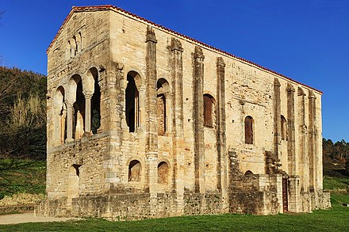
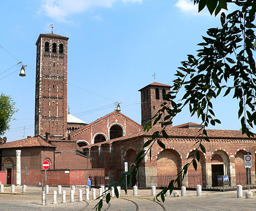
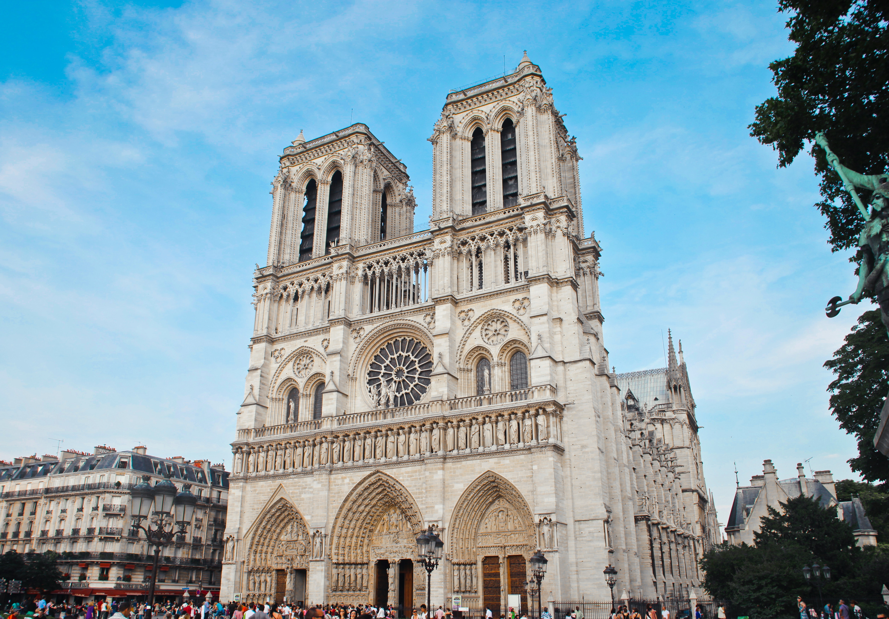

Medieval architecture is architecture common in the Middle Ages, and includes religious, civil, and military buildings. Styles include pre-Romanesque, Romanesque, and Gothic.

Pre-Romanesque
Pre-Romanesque art and architecture is the period in European art from either the emergence of the Merovingian kingdom in about 500 AD or from the Carolingian Renaissance in the late 8th century, to the beginning of the 11th century Romanesque period.
Pre-Roman architecture includes building monuments of the early Middle Ages (about 500-1000) from southern and western Europe. At this time, the Germanic tribes settled, accepted Christianity and assimilated Roman culture. Architecture switched from wooden to stone buildings, mostly Christian churches. Initially, very diverse construction types and procedures began to converge under the reign of Charles the Great.

Romanesque
Combining features of ancient Roman and Byzantine buildings and other local traditions, Romanesque architecture is known by its massive quality, thick walls, round arches, sturdy pillars, barrel vaults, large towers and decorative arcading, arches for windows, doors, and arcades;
Each building has clearly defined forms, frequently of very regular, symmetrical plan; the overall appearance is one of simplicity when compared with the Gothic buildings that were to follow. The style can be identified right across Europe, despite regional characteristics and different materials. French churches commonly expanded on the early Christian basilica plan, incorporating radiating chapels to accommodate more priests, ambulatories around the sanctuary apse for visiting pilgrims.

Gothic
Gothic architecture (or pointed architecture) is an architectural style that was prevalent in Europe from the late 12th to the 16th century, during the High and Late Middle Ages, surviving into the 17th and 18th centuries in some areas. It evolved from Romanesque architecture and was succeeded by Renaissance architecture.
Gothic architecture was particularly a style of masonry building characterized by cavernous spaces with the expanse of walls broken up by overlaid tracery. The rib vault, flying buttress, and pointed (Gothic) arch were used as solutions to the problem of building a very tall structure while preserving as much natural light as possible.